Currently Learning & Building
Hi, I’m Suprith V.
Student. Aspiring Developer. Lifelong Learner.
Aspiring Developer
I’m an engineering student passionate about technology and web development. I enjoy learning new technologies, exploring creative ideas, and turning them into practical digital experiences.
About me
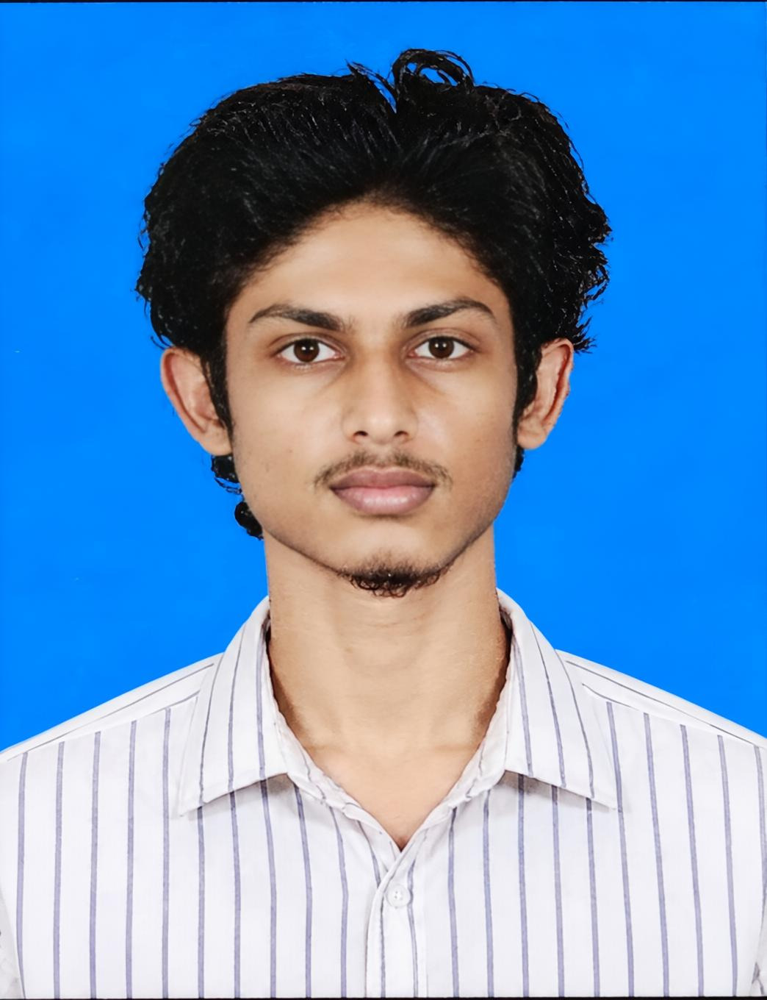
I’m Suprith V, currently pursuing my engineering studies at BGS College of Engineering and Technology. I’m at the beginning of my development journey, exploring web technologies and improving my programming skills.
I believe in learning through practical experience. Building projects allows me to understand how technology can solve real-world problems. I’m continuously working on improving my skills and expanding my knowledge.
- Current Role
- Student
- Education
- Engineering
- Focus
- Web Development
- Experience
- Beginner
Industrial Visit: Inside GTTC
A guided industrial visit to the Government Tool Room & Training Centre in Bengaluru: robots that weld, machines that cut metal, and instruments that check every millimetre.
Suprith V · CSE, BGS College of Engineering and Technology
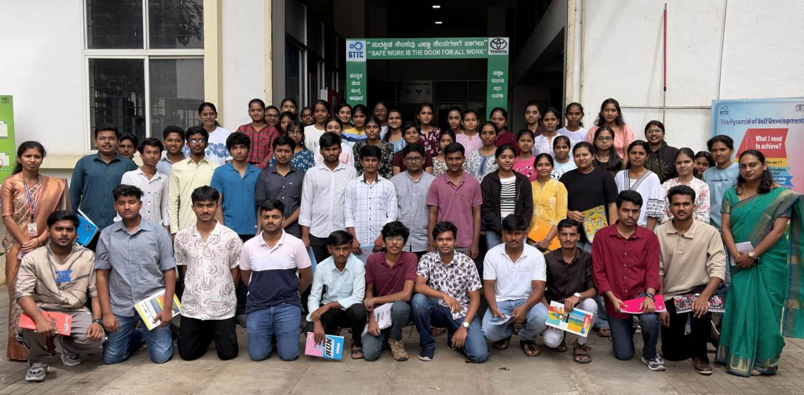
- 22 September 2026Tuesday, morning session
- GTTC, BengaluruIndustrial Estate area
- Students and facultyBGS College of Engineering and Technology
- Five focus areasRobotics, welding, CNC, metrology, 3D printing
Where we went
GTTC is a Karnataka Government training centre built around tool-room and precision engineering skills. The building we entered is labelled the GTTC Centre of Excellence, and its entrance carries a green safety arch reading “Safe work is the door for all work”, put up with Toyota.
The idea was simple: take what we study about machines, automation and manufacturing, and watch it run on a real shop floor.
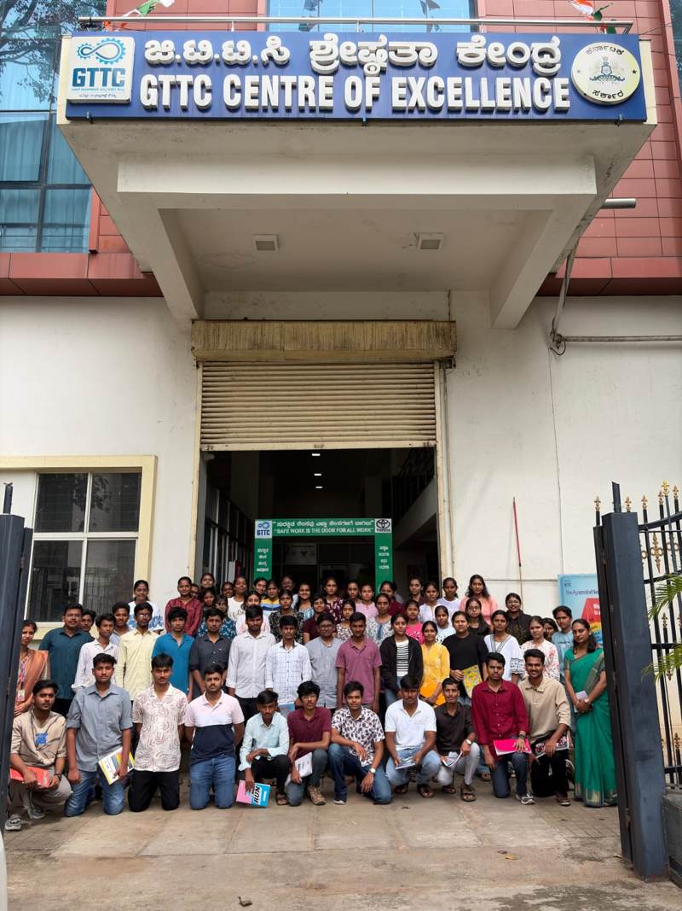
How the morning went
- 10:16 AM, assemblyThe group gathered near the buses before heading to GTTC.
- 10:57 AM, welcome briefingGTTC staff introduced the centre and its safety rules on a staircase landing, with our faculty alongside.
- 11:12 AM, machining hallA trainer explained large CNC machines under the hall’s roof trusses.
- After that, lab by labRobotics cells, automation stations, a CNC lathe, the measuring room and a prototype display.
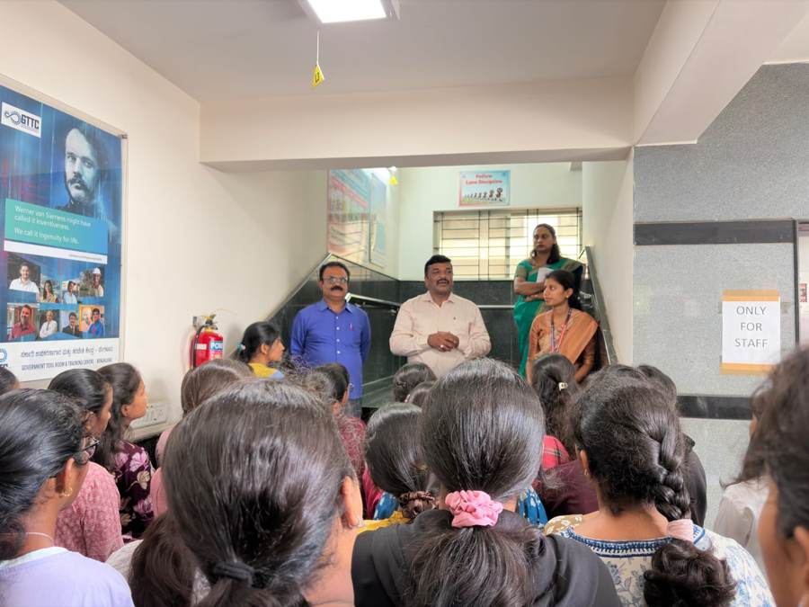
Robot welding cells
Five robot cells, one process each. The red-handled toggles are clamps that hold the work steady. A robot repeats a programmed path exactly, which is why car and machinery makers weld this way. Drag the row, or use the arrows.
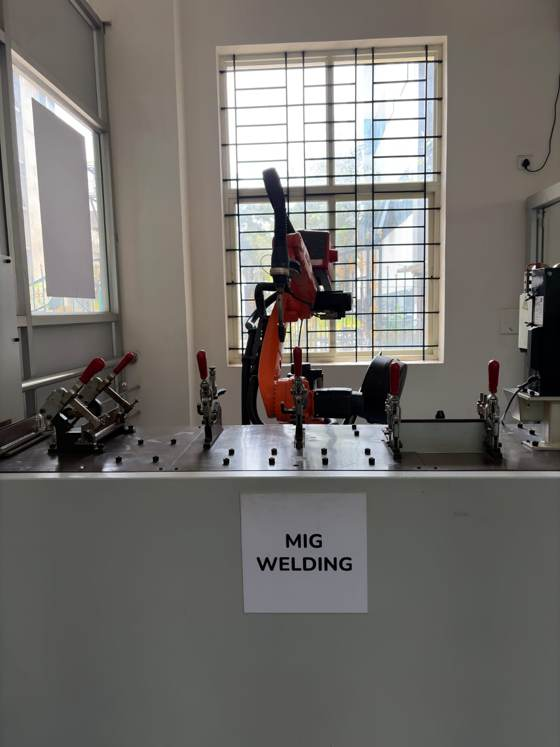
MIG welding
A wire electrode feeds through the torch non-stop. Fast, and good for general fabrication.
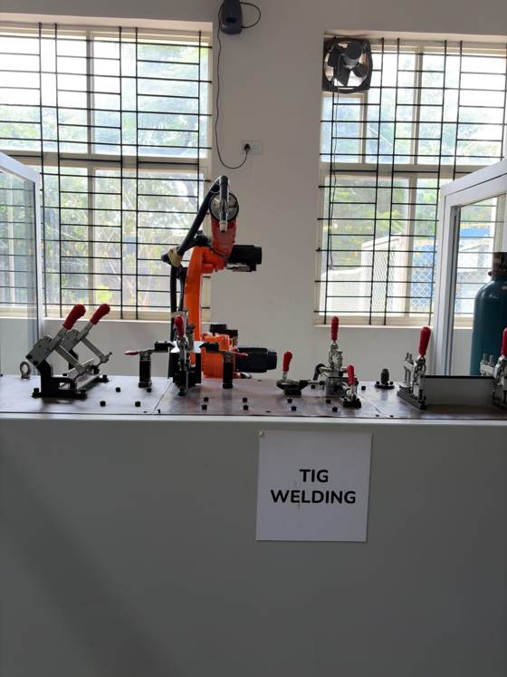
TIG welding
A tungsten electrode, filler and shielding gas give neat, precise welds on thin metal.
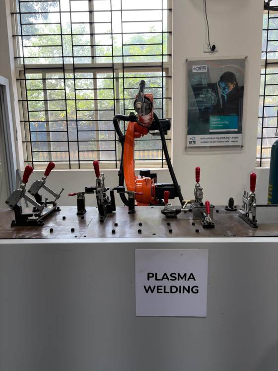
Plasma welding
A narrow, hot, constricted arc gives deep, concentrated welds with little distortion.
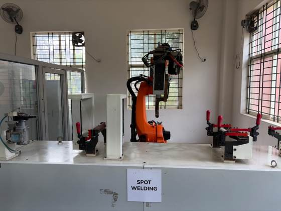
Spot welding
Copper tips squeeze overlapping sheets and pass current to fuse a spot. Common in car bodies.
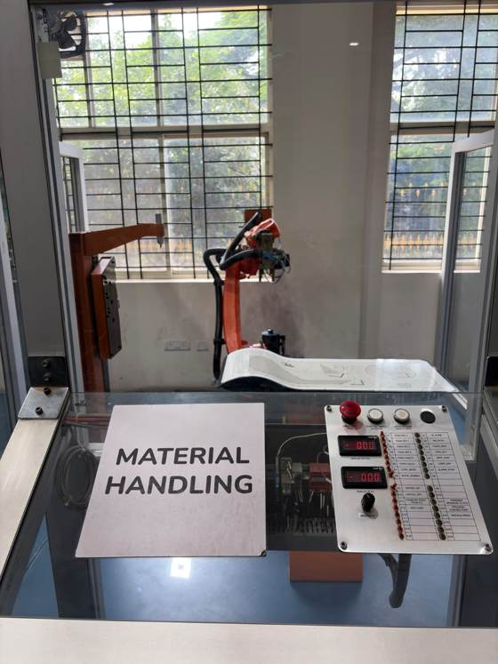
Material handling
A gripper robot follows a taught path to move parts, signalled by a PLC panel with an emergency stop.
Automation and robotics training
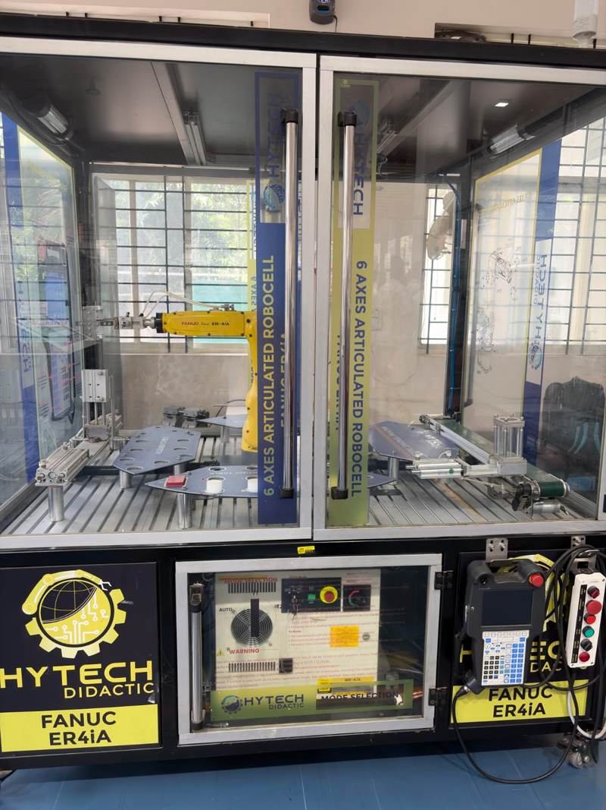
Six-axis robocell
A small yellow Fanuc ER-4iA arm sits inside a safety enclosure with a work table, pick-and-place plates and a short conveyor. The teach pendant and mode selector on the front let a student program moves, then run them in automatic mode.
Six axes means the arm can reach a part from almost any angle, much like a wrist and elbow.
Pneumatic production line
A row of Janatics pneumatic stations works like a miniature factory. Air-driven cylinders push, lift and grip parts at each station, and a PLC in the glass cabinet below decides what happens and when.
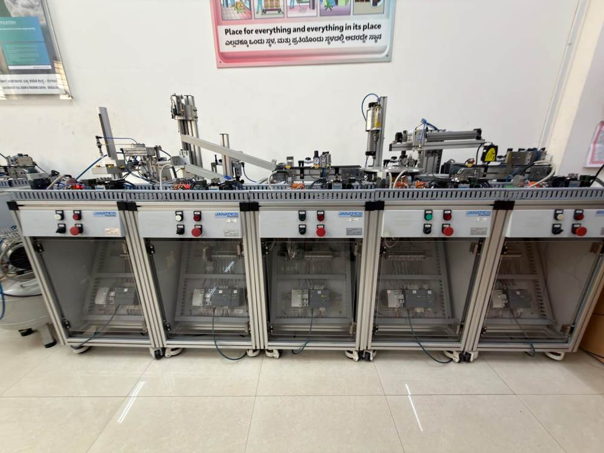
Machining: turning and milling
CNC lathe
A trainer took us through the lathe’s control panel: screen and keypad for programs, feed and spindle override knobs, and the red emergency stop. The orange beacon on top shows the machine’s status from across the room.
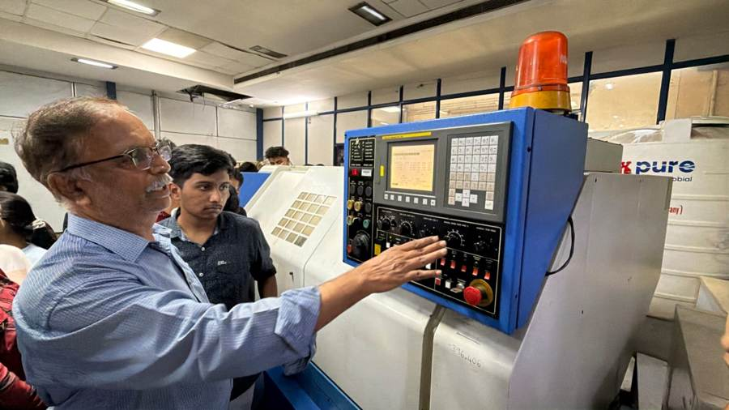
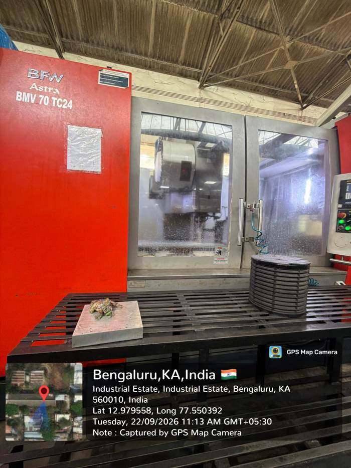
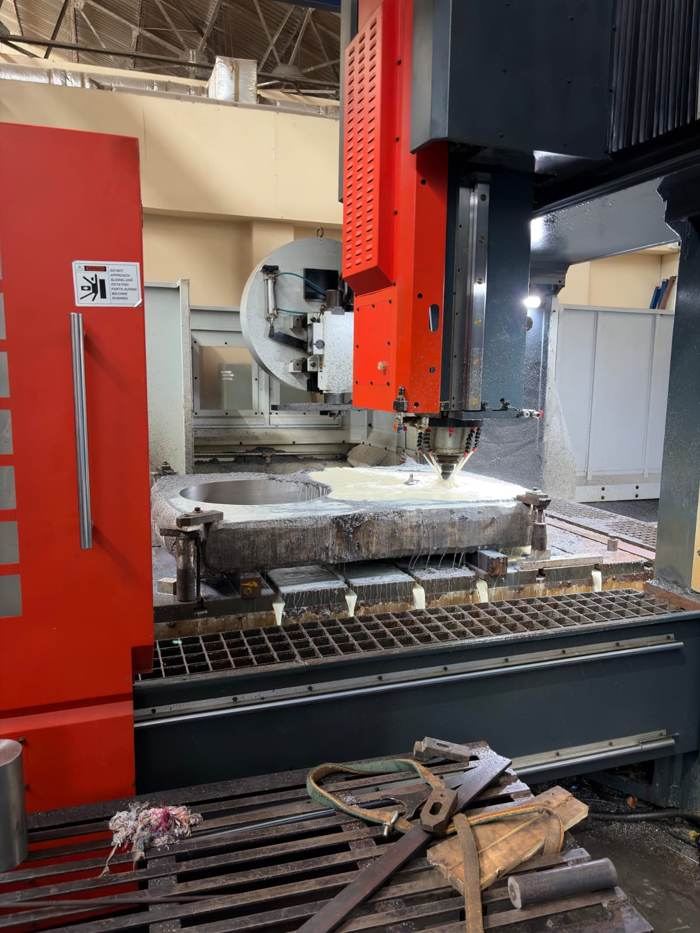
Coolant carries heat away from the cutting tool and flushes chips out of the cut. Both protect tool life and surface finish.
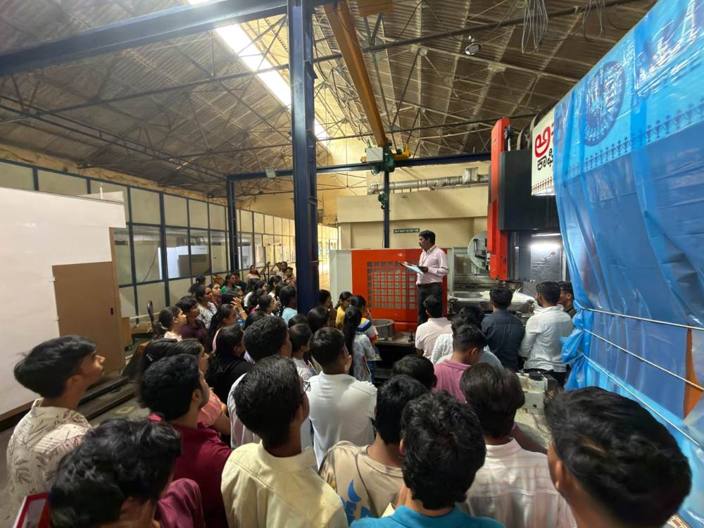
Measuring and making prototypes
Profile projector
A Dynascan PH 440 NEO shines light past a small brass fitting and enlarges its shadow on a round glass screen. From that outline an inspector can check thread shape, angles and dimensions without touching the part.
Prints from the 3D printer showed the other end of the process: gears, brackets and a wrench made in hours, long before any metal is cut. A trainer also used a rocket model and machined components to explain the precision space and defence work demands.
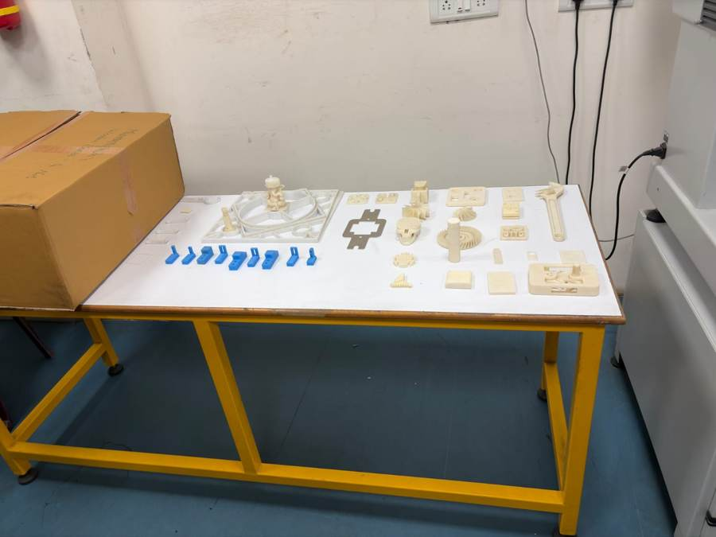
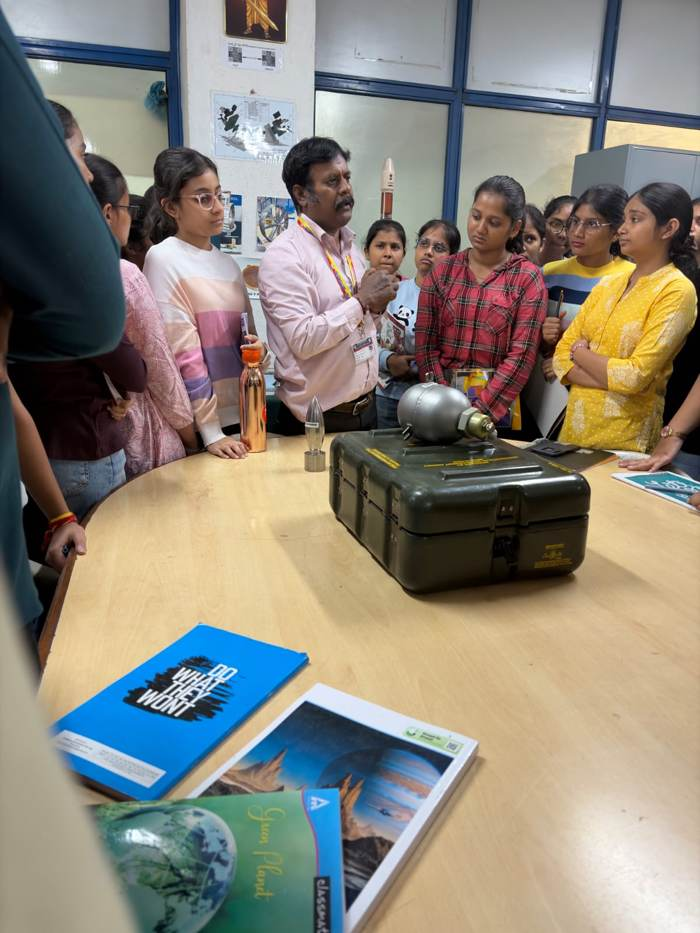
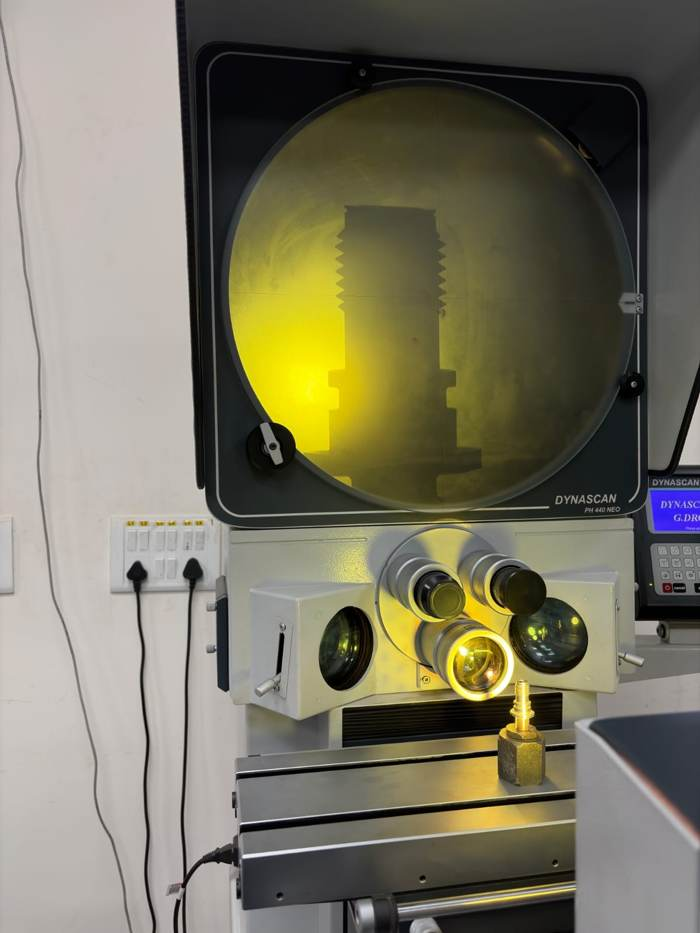
What stayed with us
- Theory runs on a floor.
- Tolerances, feeds and control logic looked different once a machine was actually doing them.
- Safety is built in.
- Emergency stops, enclosures, beacons and signs were everywhere, and every demonstration began with them.
- Software meets metal.
- Robots, CNC machines and PLCs are all programmed. For a CSE student, that was the best link to take home.
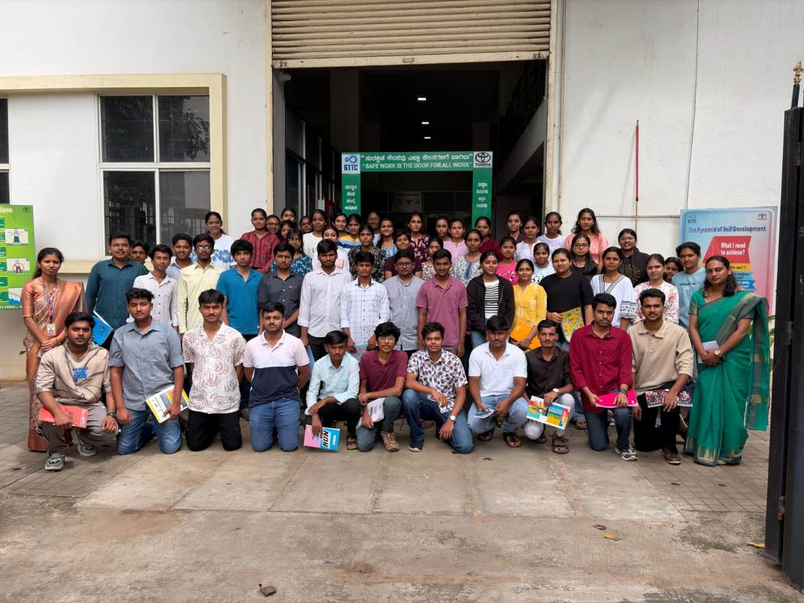
Photographs taken during the visit on 22 September 2026.
Education
BGS College of Engineering and Technology
Current status: 1st Semester
Let’s Build Something Together.
I’m always interested in learning, exploring new ideas, and connecting with people who share an interest in technology.